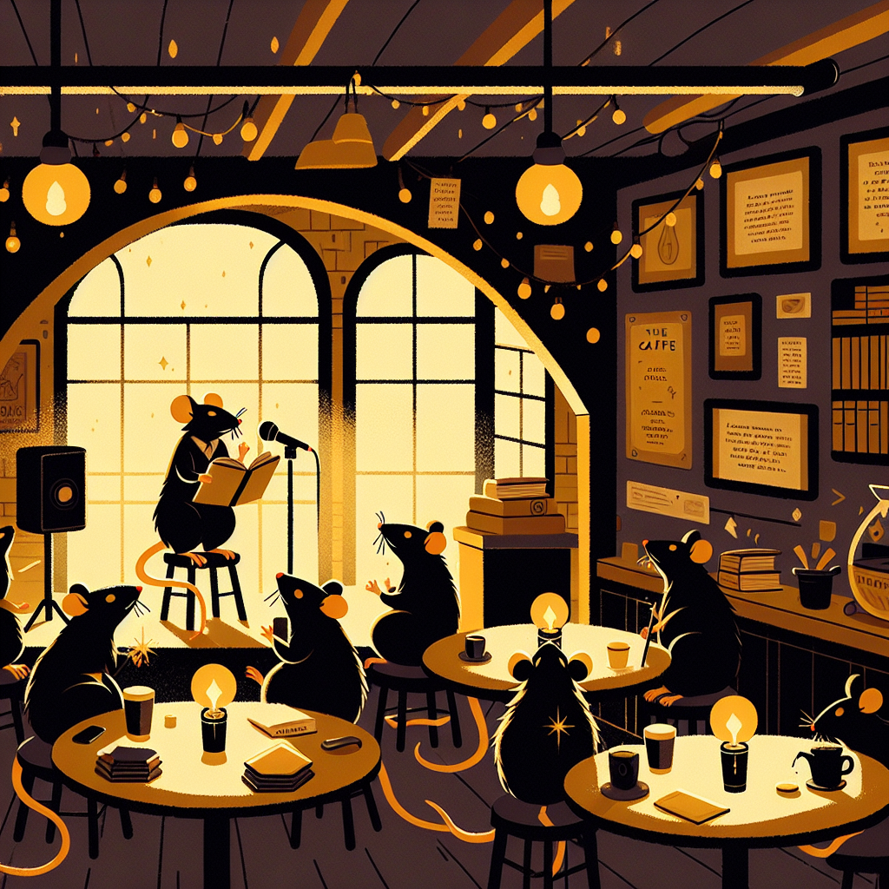

Ratopolis’ Hidden Gem: The Secret Literature Cafe
Nestled in the tranquil depths of Rose Alley, The Burrow Cafe is more than a cozy haven for Ratopolis' residents; it's a literary paradise offering weekly poetry readings and an underground book exchange that fuels the community's love for literature.

Founded five years ago by literature enthusiast Pippa Parchment, The Burrow exudes an inviting atmosphere. The cafe's wooden shelves are filled with an eclectic mix of books, from classic whisker-twitchers to contemporary tail-twisters, all for patrons to explore.
Weekly poetry readings at The Burrow are the highlight of many literature lovers' schedules. Regular attendee Nibbles McSqueak declares, "The poetry nights here are the whisker-twitching highlight of my week!" These gatherings feature a diverse lineup of poets, ensuring that every reading provides fresh and thought-provoking content.
The underground book exchange is another unique feature that sets The Burrow apart. Patrons can bring a book, leave it on the communal shelf, and take home a new one. "I found my favorite tail-twisting mystery novel here," says café regular Sienna Whiskers. Popular genres include mystery, romance, and rat history, reflecting the rich literary tastes of Ratopolis' citizens.
The impact of The Burrow on the local community is significant. The cafe has become a cultural hub, where artists and writers converge to share ideas and inspiration. Local author Fergus Furr noted, "The Burrow Cafe is where I found my muse; it's a place where stories come to life."
In addition to regular events, The Burrow hosts writing workshops and literary discussions. These special events provide an opportunity for budding writers to hone their craft and engage with seasoned authors. Upcoming workshops include sessions on narrative techniques and character development.
The vision behind The Burrow is brought to life by its passionate owner, Pippa Parchment. In an interview, Pippa shared her goals, "I wanted to create a space where literature could thrive and where the community could come together over a shared love of stories." Despite some challenges, such as sourcing rare books and managing events, Pippa finds running the cafe immensely rewarding.
Located in the charming Rose Alley, The Burrow adds to the area's quaint appeal. Rose Alley is known for its historical significance and other hidden gems, making it worth a visit.
Literary trends in Ratopolis show a growing interest in genres that explore social themes and personal growth. The Burrow fits seamlessly into this trend, offering a range of books and events that cater to these interests.
For first-time visitors, stumbling upon The Burrow feels like discovering a treasure. "I stumbled upon this place by chance, and now it's my favorite nook in the city!" gushes Minnie Whiskers.
While some might argue that newer, high-tech libraries offer more resources, The Burrow’s charm lies in its intimate setting and community spirit. It's a place where conversations happen over a cup of radish tea, and books are exchanged with excitement.
In conclusion, The Burrow Cafe is more than just a hidden gem; it’s a testament to the power of literature in bringing a community together. Whether you’re a lifelong resident or a curious newcomer, a visit to The Burrow promises an enriching experience. So, the next time you find yourself wandering through Rose Alley, step into The Burrow and let your literary adventure begin.
Weekly poetry readings at The Burrow are the highlight of many literature lovers' schedules. Regular attendee Nibbles McSqueak declares, "The poetry nights here are the whisker-twitching highlight of my week!" These gatherings feature a diverse lineup of poets, ensuring that every reading provides fresh and thought-provoking content.
The underground book exchange is another unique feature that sets The Burrow apart. Patrons can bring a book, leave it on the communal shelf, and take home a new one. "I found my favorite tail-twisting mystery novel here," says café regular Sienna Whiskers. Popular genres include mystery, romance, and rat history, reflecting the rich literary tastes of Ratopolis' citizens.
The impact of The Burrow on the local community is significant. The cafe has become a cultural hub, where artists and writers converge to share ideas and inspiration. Local author Fergus Furr noted, "The Burrow Cafe is where I found my muse; it's a place where stories come to life."
In addition to regular events, The Burrow hosts writing workshops and literary discussions. These special events provide an opportunity for budding writers to hone their craft and engage with seasoned authors. Upcoming workshops include sessions on narrative techniques and character development.
The vision behind The Burrow is brought to life by its passionate owner, Pippa Parchment. In an interview, Pippa shared her goals, "I wanted to create a space where literature could thrive and where the community could come together over a shared love of stories." Despite some challenges, such as sourcing rare books and managing events, Pippa finds running the cafe immensely rewarding.
Located in the charming Rose Alley, The Burrow adds to the area's quaint appeal. Rose Alley is known for its historical significance and other hidden gems, making it worth a visit.
Literary trends in Ratopolis show a growing interest in genres that explore social themes and personal growth. The Burrow fits seamlessly into this trend, offering a range of books and events that cater to these interests.
For first-time visitors, stumbling upon The Burrow feels like discovering a treasure. "I stumbled upon this place by chance, and now it's my favorite nook in the city!" gushes Minnie Whiskers.
While some might argue that newer, high-tech libraries offer more resources, The Burrow’s charm lies in its intimate setting and community spirit. It's a place where conversations happen over a cup of radish tea, and books are exchanged with excitement.
In conclusion, The Burrow Cafe is more than just a hidden gem; it’s a testament to the power of literature in bringing a community together. Whether you’re a lifelong resident or a curious newcomer, a visit to The Burrow promises an enriching experience. So, the next time you find yourself wandering through Rose Alley, step into The Burrow and let your literary adventure begin.